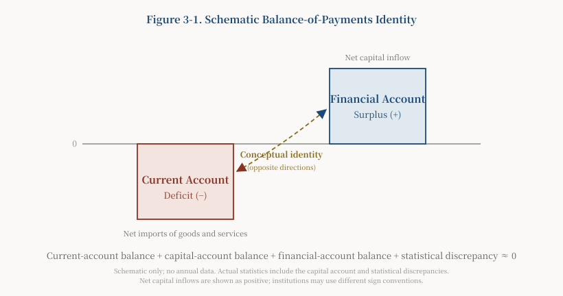

Introduction
Within individual countries, the contemporary world consists largely of government-regulated market economies, differing mainly in the degree of intervention. At the global level above sovereign states, however, there is no regulator comparable to a national government. Humanity has yet to establish a world government with full sovereignty and coercive enforcement capacity. The global economy is governed through a fragmented combination of competition among sovereign states, coordination by international organizations, treaty constraints, and market mechanisms. The United Nations, IMF, World Bank, WTO, Bank for International Settlements, regional organizations, international treaties, and cross-border regulatory cooperation all exist, but there is no third party comparable to a national government that can assume responsibility for the whole domain and enforce its decisions.
Part I of this trilogy examined the micro-level dialectical movement of the “two kinds of production” undertaken by families and enterprises. Part II incorporated government production of public goods and developed a macro-aggregate analysis of the “three kinds of production”. Part III considers the third limitation of Mankiw’s Principles of Economics and the relationships among state power, international money, and international public goods.
I. What Exactly Is the Third Defect?
A clarification is needed at the outset. This essay does not accuse Mankiw of entirely ignoring international economics or government. On the contrary, his introductory textbook discusses international trade, open-economy macroeconomics, market power—monopoly, oligopoly, and monopolistic competition—and the role of government. The criticism here is more specific:
Mankiw discusses market power, the open economy, and the role of government separately, but does not integrate state power, the power to issue international money, and international public goods into a single framework of global political economy. His principal units of analysis remain enterprises, households, and the individual national economy, making it difficult to explain why global institutions remain persistently imbalanced in the absence of supranational sovereignty.
This is the precise formulation of the third defect. The point is not that “Mankiw does not discuss international economics”, but that he lacks a unified framework capable of accommodating state power and global public goods. Without such a framework, a series of crucial phenomena cannot be explained: Why does one country’s currency become a global currency when there is no world government? Why do the domestic policies of a major power become problems for other countries? Why can global markets generate both cooperation and persistent inequality and recurrent crises?
The proposed remedy is to extend the Grand Tripartite framework established in Part II from the domestic to the global level. The key is to identify the structural consequences of the fact that domestic markets have government as a third party, whereas global markets do not. The domestic framework is first restated in compressed form—the first two parts have already developed it fully—before the analysis turns to the global level.
II. From the Domestic Grand Tripartite to the Global Governance Gap
A government-regulated market economy does not mean that government may do whatever it pleases. On the contrary, under sound institutions, government is confined within the separation and checks and balances of the Grand Tripartite and must fulfil its responsibility to produce and supply public goods. The Grand Tripartite consists of Family-Household Rights, Enterprise Rights, and Government Power, whose separation and checks and balances correspond to the three major social relationships: labour–capital, government–enterprise, and government–citizen relations. Parts I and II have explained this framework in detail. Only two points directly relevant to the present essay need to be restated.
First, government is not naturally neutral, but a third party with interests of its own. Positioned between families and enterprises, government does have an incentive to mediate between labour and capital and preserve its sources and base of taxation. Wages that are too low will undermine consumption, while eroded profits will depress investment; both damage the tax base and thus government’s own objective. Yet possessing this incentive does not mean that government will automatically correct imbalances and return to neutrality:
Government is not naturally neutral, but a third party with interests of its own. Constraints arising from the sources of taxation give government an incentive to correct imbalances, but whether correction actually occurs depends on the capacity of families and enterprises to check its power, information feedback, boundaries governed by the rule of law, and political accountability. Government may likewise be captured by capital, bureaucratic groups, or populist forces. It may also sustain its power through coercion, information control, and resource rents instead of returning to equilibrium.
This accords with the conditional proposition established in T-3, Heheism: The Philosophical Foundation of Synthesis Political Economy (hehe: harmony-and-union), and in Part II: a tripartite structure is not automatically superior to a binary one. Whether government can perform its mediating role depends on whether it is subject to effective checks and balances. A government that fails in its responsibilities may lose power, but it may also preserve power by other means. This is precisely why institutional checks and balances are necessary.
Second, wages, profits, and taxes are three distributive variables, not three “prices”. Wages may be understood as remuneration for labour and profits as returns to capital, but taxes are compulsory statutory levies, not market prices in the same sense. The three cannot jointly determine a strict “equilibrium price”:
The game among families, enterprises, and government over wages, profits, and taxes forms a dynamic equilibrium structure of the Grand Tripartite, or a dynamic allocation of wages, profits, and taxes. Within it, taxation is an institutional distributive variable, not the price of public goods.
In this dynamic allocation, the interests of the three parties rise and fall relative to one another and reach a dynamic balance through market competition and political games. Once an imbalance arises—for example, if wage growth persistently lags behind profits and taxation—the economy encounters problems. This allocation reflects the deeper structure of rights and power among the three parties and delineates their respective behavioural boundaries.
These two points bring us to the real subject of this essay: domestic markets have government as a third party subject to checks and balances; global markets do not. This difference is the key to understanding the dollar system, international public goods, and global imbalances.
III. Three Mechanisms for the Formation of International Public Goods
Human civilization has not established an effective world government. The United Nations and other international organizations play roles in particular fields, but none possesses the functions and authority of a world government. At the global level, therefore, negative externalities lack a third party comparable to a domestic government. If one country pollutes the global climate, there is no “world government” able to correct this cross-border externality as a national government might tax pollution by a chemical plant.
In the absence of such a third party, every country resembles a “limited-liability company” primarily responsible for its own interests. The pursuit of national interest is itself normal. The question is who supplies international public goods—international security, international order, stable international money, and an open trading system—and how, when no world government exists. This essay argues that they arise principally through three mechanisms:
First, cooperation through international organizations and treaties. States negotiate treaties and establish international organizations to supply international public goods jointly, including global health systems, climate agreements, and trade rules. Such cooperation can generate positive externalities, but collective-action problems and weak enforcement often lead to undersupply.
Second, deliberate provision by a hegemonic state. A dominant power may actively supply international public goods—such as international money, maritime security, and last-resort lending—to maintain an order in which it holds the leading position. It may supply these goods more effectively, but their direction and conditions are determined by its interests and inherently carry the possibility of exclusion and coercion.
Third, the positive and negative spillovers of self-interested state action. States pursuing their own interests may unintentionally create positive cross-border externalities, such as technological diffusion and market opening, or negative ones, such as the transmission of financial crises and environmental damage. These spillover public goods are not deliberately supplied but arise as by-products of self-interested action, with effects that may be positive or negative.
The anarchic structure of global governance is an important, but not the only, cause of severe inequality in national development. Historical conditions, geographical endowments, colonial legacies, the quality of domestic institutions, and the accumulation of human capital all play a part. Likewise, competition in global markets may generate concentration and market power, but competition does not necessarily produce monopoly, nor is monopoly the inevitable source of every inequality. This essay argues that, without a global third party to correct imbalances, market power and cumulative inequality are more likely to arise and harder to correct.
Of all international public goods, the dollar most clearly exemplifies the interaction of these three mechanisms.
IV. The Dollar System: Public Service, National Privilege, and Global Risk
This essay argues that the dollar’s international role has three attributes at once. It is an international public service, providing the global trading and financial system with instruments for denomination, payment, settlement, and reserves; a national privilege, giving the United States seigniorage, financing advantages, and financial influence; and a channel for the transmission of global risk, through which US domestic policy spills over as shocks to other countries. The tensions of the dollar system arise from the interaction of all three.
The formation and expression of the dollar’s international role. After the Second World War, the United States used its economic strength and large gold reserves to lead the establishment of the Bretton Woods system, placing the dollar at its centre. When the dollar’s link to gold ended in 1971, it became a fiat currency, but its international position persisted through multiple mechanisms. In recent years, the dollar has accounted for approximately 58 per cent of official foreign-exchange reserves worldwide and has remained dominant in trade invoicing, foreign-exchange transactions, and international payments.[1]
Mythologized accounts of the “petrodollar” should be avoided. The petrodollar system emerged through a complex historical process. A series of arrangements between the United States and Saudi Arabia and other oil-producing countries during the 1970s, together with the dollar’s existing international position, market inertia, and network effects, reinforced the link between oil trade and the dollar. This was the product of a long evolution involving several factors, not a secret agreement requiring that “oil must be settled in dollars”.
The central contradiction of the dollar system: the Triffin dilemma and its evolution. Triffin originally identified a contradiction under Bretton Woods between global demand for dollar liquidity and confidence in the dollar’s convertibility into gold. The more dollars the world needed, the more dollars the United States had to supply; yet the more it supplied, the more confidence in gold convertibility was called into question.[2] In the era of the fiat dollar, the gold constraint has disappeared, but the dilemma has evolved into another tension: the world needs ample and stable dollar liquidity, while the supply and price of dollars principally serve US domestic policy objectives. US current-account deficits, cross-border bank credit, and the offshore dollar market all help supply dollars to the world; this function need not, and does not, depend entirely on US current-account deficits.
Underlying this tension is an asymmetry between power and accountability. It must be stated accurately, without appealing to a nonexistent legal principle. No rule of international law provides that “only a world government is entitled to issue global money”. The dollar acquired its global functions principally through the combined effects of choices by governments, enterprises, and financial institutions, institutional arrangements, and long-established network effects. The real structural contradiction is this:
The dollar’s global functions do not derive from a global mandate, but from the combination of US domestic sovereignty, market choice, and long-established network effects. The resulting structural contradiction is that monetary power rests on US domestic authorization, while its policy consequences spill over globally; countries affected by those consequences do not possess decision-making and accountability rights commensurate with the effects upon them.
This is more accurate and theoretically stronger than the claim that “the United States has exceeded its authority by exercising the power to issue world money”. It moves the criticism away from a questionable legal proposition and towards a real defect of governance: a concentrated expression of the structural absence of a world government.
Four levels must be kept strictly distinct. In accordance with the monetary framework clarified in Part II, the dollar, US Treasury securities, bank credit, and central-bank money are four different concepts and must not be conflated:
- The dollar: the international money used for denomination, payment, and settlement;
- US Treasury securities: dollar-denominated safe assets, reserve assets, and financial collateral;
- Bank credit creation: dollar deposits created through lending by commercial banks, including in the offshore Eurodollar market;
- Central-bank money creation: the Federal Reserve can alter the monetary base through open-market asset purchases, discount-window lending, repurchase agreements, and other liquidity instruments; purchasing Treasury securities in the secondary market is one such instrument.
US Treasury securities are not the dollar. Global demand for dollars is not met simply by additional issuance of Treasury securities. International dollar liquidity comes through multiple channels: the cross-border balance sheets of US banks and non-bank financial institutions, the offshore Eurodollar market, the creation of dollar credit by commercial banks, cross-border portfolio investment, Federal Reserve swap lines and repurchase facilities, and dollar payments generated by US current-account deficits. Therefore:
The dollar provides instruments for denomination, payment, and settlement; US Treasury securities principally provide dollar-denominated safe assets, reserve assets, and financial collateral. The two support one another, but must not be conflated as a single form of money supply.
The nature of the Federal Reserve must be understood accurately. The Federal Reserve does have a mixed public–private organizational structure: member banks hold statutory shares in the regional Federal Reserve Banks. But the Board of Governors is a federal government agency; the Federal Reserve System is not owned by its member banks, and monetary policy is not determined by private shareholders.[3] Therefore:
The Federal Reserve has a mixed public–private organizational structure, but its statutory objectives and monetary-policy powers derive from Congress. It acts first under US domestic authorization, while its policies generate global spillovers through the dollar system.
The forceful criticism is that an institution authorized by Congress and accountable first to the United States generates monetary-policy spillovers throughout the world and becomes a source of shocks to other countries. The issue is not “who owns the Federal Reserve”, but that the domestic decisions of one country’s central bank have quasi-global central-bank consequences without global accountability.
The relationship between the Federal Reserve and the Treasury must also be kept clear. The Federal Reserve may not purchase newly issued Treasury securities directly from the Treasury; it conducts open-market operations in the secondary market. Its decisions to purchase securities and the Treasury’s decisions to issue debt are legally and institutionally independent.[4] More specifically:
The Treasury issues securities in the primary market; the Federal Reserve buys and sells Treasury securities in the secondary market in pursuit of monetary-policy objectives, thereby affecting reserves, liquidity, and interest-rate conditions.
The “dollar tide” has three distinct levels. Federal Reserve monetary policy is formulated primarily in response to the US domestic economy—employment and inflation. Its interest-rate increases and cuts can cause sharp movements in global capital flows, exchange rates, and asset prices. Emerging markets attract capital inflows and accumulate dollar debt during periods of dollar easing, then face capital outflows, currency depreciation, and heavier debt burdens when dollar conditions tighten. The 1997 Asian financial crisis and the 2013 “taper tantrum” were both connected with this phenomenon, which may be called the “dollar tide”. A strong claim surrounding it is that the United States “deliberately creates the tide and harvests the world”. Evaluating that claim requires distinguishing three levels:
- Verifiable fact: Federal Reserve policy affects global interest rates, exchange rates, and capital flows; extensive evidence supports this;
- Mechanism-based judgment: the dollar system externalizes part of the costs of US policy to other countries, while the United States benefits from the dollar’s position; this is a reasonable structural inference;
- The author’s inference: the United States may exploit this structural advantage to protect its national interests; this is a critical judgment about motivation and has not yet been fully verified by direct evidence.
This essay argues that moving from “policy causes capital flows” to “the United States intentionally creates dollar tides to extract monopoly profits from the world” is an inference about motivation, not a directly established fact. Moreover, when the dollar appreciates, other currencies depreciate against it, which may ordinarily lower rather than raise the dollar prices of their goods. Actual changes in export competitiveness depend on invoicing rigidities, imported inputs, dollar debt, and enterprises’ pricing power, and cannot be generalized.
V. The US Balance of Payments, Fiscal Debt, and Domestic Distribution
The dollar system’s three attributes ultimately find expression in the US balance of payments and fiscal debt, reconnecting them to domestic distributive tensions. This section therefore advances the essay’s central proposition: the “securitization of America’s social contradictions”.
The balance-of-payments identity. The United States has long run a current-account deficit, matched by a net inflow in the financial account. The current account records trade in goods and services, cross-border income, and current transfers; in balance-of-payments terms, a current-account deficit corresponds to net external borrowing.

Figure 3-1. Schematic Balance-of-Payments Identity. The figure illustrates only the identity linking the current and financial accounts in opposite directions and contains no figures for a specific year. Although the balance of payments must balance conceptually, actual statistics also include the capital account and statistical discrepancies, so two independently estimated balances do not mirror one another exactly every year. The BEA likewise explains that net lending or borrowing from the current and capital accounts is theoretically equal to that from the financial account, while statistical discrepancies arise in practice. The figure follows the conventional presentation in which net capital inflows are positive. Statistical agencies may apply different sign conventions to the financial-account balance—for example, net acquisition of assets less net incurrence of liabilities—so actual data must be converted according to the relevant convention.
Figure 3-1 presents this identity conceptually and contains no annual figures. In actual statistics, the current and financial accounts do not mirror each other exactly every year because of the capital account and statistical discrepancies. Actual data should be taken from the original BEA international transactions series.[9]
One judgment deserves emphasis: for the United States, with the dollar’s international position, a trade deficit is not necessarily a pure “loss”. Capital inflows finance the current-account deficit and may lower financing costs, support asset markets, and reinforce the dollar’s position. A trade deficit therefore cannot be understood simply as a unilateral loss to the United States. Yet its distributive consequences across industries, regions, and classes are uneven: consumers and the financial and technology sectors may benefit, while some manufacturing regions and workers lose. This unevenness anticipates the distributive conflict discussed below. At the same time, deficits accumulate debt and refinancing pressure, so they cannot be described as an unqualified benefit.
What determines the trade deficit? Households and enterprises, not government, are the principal actors in trade. It is inaccurate to say that the US trade deficit is caused by “government issuing debt to purchase goods from abroad”. As an accounting matter, the current-account balance corresponds to the difference between national saving and domestic investment; as an economic mechanism, private saving and investment, the fiscal balance, exchange rates, domestic demand, and cross-border capital flows jointly determine the outcome. Low saving, high consumption, fiscal deficits, and the United States’ position as a destination for capital inflows together produce its persistent current-account deficit. No single chain of “government borrowing to buy goods” can capture this.
Debt pressure and buffers: will the United States enter a “debt death spiral”? At the end of 2024, gross US federal debt exceeded USD 36 trillion, approximately 120 per cent of GDP. Debt held by the public—the measure more suitable for analysing fiscal sustainability—stood at approximately 100 per cent of GDP. In fiscal year 2024, federal net interest outlays were approximately USD 880 billion, exceeding defence expenditure for the first time.[5] Large volumes of debt issued during the low-interest-rate era must be refinanced at higher rates, further increasing the interest burden. Sovereign-rating downgrades and disputes over the debt ceiling add to uncertainty.[6] Meanwhile, de-dollarization is proceeding slowly, and the dollar’s share of global reserves has declined from approximately 72 per cent around the beginning of this century to approximately 58 per cent in recent years.[7]
Powerful buffers nevertheless remain. The dollar’s status as world money gives the United States a unique advantage. The Treasury market is the world’s largest and most liquid bond market, and global demand for safe assets continues to support it. US innovation at the technological frontier, including AI, may strengthen debt-servicing capacity through renewed productivity growth. There is technical scope to raise taxes on enterprises and the wealthy; fiscal consolidation is technically possible, though political consensus is difficult. Overall, this essay concludes that the United States is likely to avoid a debt death spiral in the short term because of the dollar privilege and the depth of its markets. Long-run risk, however, depends on three variables: whether the two parties can break their deadlock and enact fiscal reform; whether technologies such as AI can produce another productivity miracle; and whether de-dollarization erodes the dollar’s moat beyond a critical threshold. Major holders of US Treasury securities, including China, must approach this potential risk with bottom-line thinking.
Manufacturing employment: a multicausal process, not a single culprit. Attributing job losses among US manufacturing workers simply to one form of capital “taking away their livelihoods” reduces a complex process to a single cause. Changes in US manufacturing employment reflect at least the combined effects of automation and productivity growth, import competition from China and elsewhere, the global relocation of industry, declining unionization, the shareholder-value orientation of corporate governance, regional differences in education and industrial structure, and exchange-rate, tax, and macroeconomic policies:
This essay argues that automation, globalization, and financialization have jointly restructured US manufacturing employment. “Silicon Valley–Wall Street high-tech finance capital” has been one important beneficiary and driving force in this process, but not its sole cause.
“Silicon Valley–Wall Street high-tech finance capital” is an analytical concept proposed here to describe the combination of high-technology industrial capital and finance capital and the resulting concentration of wealth. It has explanatory value, but it is the author’s analytical construct, not a sole cause established after excluding every competing explanation. Globalization has indeed produced a divided landscape that can be captured by a metaphor: technology and finance on the east and west coasts form the “smiling ends”, while the Rust Belt of the Midwest is the “bitter middle”. Yet US political geography is considerably more complex than “the coasts versus the Midwest”: the Rust Belt itself is a swing region, and high-tech and financial capital do not make uniform political choices. Distributive divisions are related to the US political map, but this does not establish that a single form of capital directly reshaped its red–blue divide.
The theoretical conclusion: the securitization of America’s social contradictions. The essay’s central proposition can now be stated. First, however, an oversimplification must be avoided: the proposition should not be reduced to a cash-flow story in which “the rich lend money to government, which uses it to support the poor”. That simplification does not withstand scrutiny, because the creditors holding US government debt are not only the wealthy.
US federal debt is conventionally divided between intragovernmental holdings, such as Social Security trust funds, and debt held by the public. The latter is further divided among the Federal Reserve, domestic private holders, and foreign holders. The Federal Reserve itself is a domestic holder within debt held by the public and should not be placed alongside domestic and foreign holders as a third parallel category. Domestic public holders include not only wealthy individuals, but also pension funds, mutual funds, insurers, banks, and a broad base of depositors. Large holdings are also held by foreign governments and institutions and by the Federal Reserve.[8] It is therefore inaccurate to say that “the creditors holding US government debt are mainly the rich”. Likewise, Treasury receipts flow into the unified federal budget; a particular security cannot be matched transaction by transaction with a particular welfare outlay. “Government borrows from the rich specifically to fund social security” is an abstract simplification, not the actual cash-flow path of Treasury securities.
Once these points are clarified, the precise meaning of the “securitization” proposition becomes clear. It is not a cash-flow story but a structural mechanism.
Through borrowing and transfer payments, the federal government sustains social-security and welfare commitments in a highly unequal society, mitigating distributive tensions and maintaining stability. The mechanism must be stated precisely. Welfare commitments are not converted item by item into Treasury securities. Rather, when a persistent gap emerges among welfare commitments, public expenditure, and taxing capacity, fiscal deficits are financed by Treasury securities, and part of the distributive conflict is converted into tradable, rollable, intergenerational public debt. The proposition may therefore be defined as follows:
By the “securitization of America’s social contradictions”, this essay means that fiscal conflicts arising from inequality, welfare commitments, tax politics, and intergenerational distribution are partly converted, deferred, and recorded on the national balance sheet through debt financing. America’s distributive tensions therefore no longer erupt immediately only as conflict in the streets; some are packaged and deferred in Treasury securities, a financial instrument that can be rolled over and transferred across generations.
This is a theoretical proposition awaiting verification, not a conclusion already established by budget data. It offers a structural perspective on the US fiscal predicament: at a deeper level, the problem of federal debt is not merely financial or monetary, but an institutional expression of distributive tensions within US society. Empirical testing requires additional conditions: only if distributive inequality remains significantly associated with demand for transfer payments, structural deficits, or debt expansion after controlling for the economic cycle, population ageing, changes in taxation, and healthcare costs would the evidence support the proposition. One relevant observation is that, when creditors—whether wealthy individuals or institutions—lose confidence in the sustainability of this balance sheet, pressure is transmitted through the Treasury market. Sharp movements in Treasury yields around 2025 may be one manifestation. But establishing a sustained flight of funds from the dollar system would require continuing evidence from holdings and capital flows; short-term movements in equities, bonds, and exchange rates are insufficient.
Competing explanations. The “securitization” proposition is not the only explanation of the US fiscal predicament and must be considered alongside alternatives. First, standard fiscal-sustainability analysis—debt-to-GDP ratios, the interest–growth differential r − g, and the primary deficit—can explain debt dynamics in purely fiscal terms without invoking “social contradictions”. Second, the political-economy theory of veto points attributes US debt expansion to rigid expenditure and the difficulty of raising taxes under a two-party system. Third, demographic explanations emphasize ageing as the principal cause of rising Social Security and healthcare expenditure. Each has explanatory force, and this essay does not reject them. Its proposition claims to add one perspective: connecting fiscal debt to the structure of domestic distribution helps explain why welfare commitments continue to accumulate and why retrenchment is so difficult—because they have been “securitized” into a balance sheet affecting society as a whole. Whether this perspective holds is left to readers and fellow scholars to test.
VI. Institutional Questions under Multipolarity and the Heheist Response
Taken together, the preceding sections reveal the full consequences of the third defect. Domestic markets have government as a third party—subject to checks and balances—that can correct externalities, regulate distribution, and supply public goods. Global markets have no world government. International public goods can arise only through the three imperfect mechanisms of cooperation, hegemonic provision, and self-interested spillovers. The dollar system concentrates all the tensions of “one country’s currency serving as world money”: it provides a public service, constitutes a national privilege, and transmits risk. Mankiw’s framework cannot analyse this level because its units of analysis end with enterprises, households, and the individual nation-state. It lacks a political-economy framework integrating state power and global public goods.
What, then, is the way forward? This essay locates the root of the problem in the structural absence of global governance, not in the moral defects of any one country. Merely condemning US “hegemony” or expecting a great power to act “altruistically” does not solve the problem. Without a world government, it is unrealistic to expect a hegemonic power unilaterally to surrender its interests; repeating zero-sum competition in which one side must die for the other to live will instead place the world in danger.
The real direction is to acknowledge multipolarity and national self-interest while exploring a path on which international public goods arise more through “cooperation” than through “hegemonic provision” or “negative spillovers”. This requires an intellectual resource capable of moving beyond the conflict between liberalism and socialism and fostering cooperation rather than zero-sum confrontation among states. This essay proposes Heheism, rooted in Chinese philosophy, as one candidate answer. It advocates coexistence amid difference, cooperation as the normal condition, and dynamic balance among plural subjects—an experimental projection onto global governance of the domestic logic of checks and balances and cooperative coexistence within the Grand Tripartite.
This is only a proposed direction, not a ready-made programme. Whether and how Heheism can respond to the global governance gap, what it is, where it comes from, and how it might integrate liberalism and socialism while moving beyond the law of the jungle are not developed here. Readers are referred to T-3, Heheism. The point here is simply that the “absence of a global third party” diagnosed in Part III is precisely the problem to which the Heheism advanced in T-3 seeks to respond.
The implications for China are more concrete. China–US trade could be mutually beneficial on the basis of comparative advantage. This essay argues that distributive tensions within the United States and political pressure from manufacturing regions are important drivers of the trade war; technological competition, geopolitics, and supply-chain security also shape the policy. The trade war is not the product of a single factor. Whatever its causes, it warns China that an export-oriented model excessively dependent on external demand is unsustainable for an economy of its size. As Part II repeatedly argued, “Productive Forces Running Ahead, Life-Reproduction Capacity Lagging Behind” is unsustainable, and the priority given to production over life must change. In the long run, China must reduce excessive dependence on external demand and trade surpluses and strengthen the contribution of household consumption and domestic demand to growth. The aim is not mechanically to reduce the current account to zero—it need not balance every year—but to ground growth more firmly in domestic Life-Reproduction Capacity. This accords with the value judgment maintained throughout this website: Life-Reproduction Capacity takes primacy over Productive Forces.
Conclusion
Taking Mankiw’s Principles of Economics as their point of departure, the three parts of this essay move from the micro-level dialectical movement of the “two kinds of production”, through the macro-aggregate analysis of the “three kinds of production”, to the global market economy without a world government. At each level they identify a limitation of mainstream economics textbooks and propose an analytical framework to remedy it. The three limitations unfold progressively. At the micro level, the family is reduced to an owner of factors; at the macro level, accounting rules alone cannot explain structural imbalances among the three kinds of production; and at the global level, there is no unified framework accommodating state power and international public goods.
Humanity is unlikely to establish a world government with full sovereignty in the foreseeable future, and the tensions of fragmented global governance will persist. As a multipolar world order takes shape, the world needs not only a new balance of power but also an intellectual resource capable of moving beyond the conflict between liberalism and socialism and fostering cooperation among states. This essay argues that Heheism, rooted in the wisdom of Chinese philosophy, is one candidate worthy of exploration. What it is, where it comes from, and how it might work are discussed in T-3, Heheism.
Notes
- On the dollar’s share of global official foreign-exchange reserves—approximately 58 per cent—see International Monetary Fund, Currency Composition of Official Foreign Exchange Reserves (COFER), IMF Data, quarterly data for 2024 (
data.imf.org/cofer). On its shares of international trade invoicing and foreign-exchange transactions, see Bank for International Settlements, Triennial Central Bank Survey of Foreign Exchange and OTC Derivatives Markets (2022) (bis.org). On international payments, see SWIFT, RMB Tracker / SWIFT Watch, monthly reports (swift.com). - Robert Triffin, Gold and the Dollar Crisis: The Future of Convertibility (Yale University Press, 1960). Triffin’s original argument concerned gold convertibility under the Bretton Woods system; the extension to the era of the fiat dollar is explained in the text.
- Board of Governors of the Federal Reserve System, “Who owns the Federal Reserve?”. Member banks hold statutory shares in the regional Federal Reserve Banks, but the Board of Governors is a federal government agency and monetary policy is not determined by private shareholders.
- Board of Governors of the Federal Reserve System, “How does the Federal Reserve’s buying and selling of securities relate to the borrowing decisions of the federal government?”. The Federal Reserve does not purchase newly issued Treasury securities directly from the Treasury; it conducts open-market operations in the secondary market.
- On gross federal debt, debt-to-GDP ratios, and net interest outlays, see US Department of the Treasury, Fiscal Data (
fiscaldata.treasury.gov); and US Congressional Budget Office, The Budget and Economic Outlook (2024/2025) (cbo.gov). “Gross federal debt” refers to approximately USD 36 trillion, or 120 per cent of GDP. Debt held by the public is approximately 100 per cent of GDP and is more suitable for fiscal-sustainability analysis. Federal net interest outlays in fiscal year 2024 were approximately USD 880 billion, exceeding defence expenditure for the first time; see the relevant Treasury and CBO tables. - Standard & Poor’s lowered the long-term sovereign credit rating of the United States from AAA to AA+ in August 2011; Fitch lowered the US Long-Term Foreign-Currency Issuer Default Rating from AAA to AA+ in August 2023; and Moody’s Ratings lowered the Government of the United States’ long-term issuer and senior unsecured ratings from Aaa to Aa1 on 16 May 2025, changing the outlook from negative to stable. These details follow the agencies’ official announcements. On disputes over the debt ceiling, see the relevant annual records of Congress and the Treasury.
- On the decline in the dollar’s share of global reserves from approximately 72 per cent around 2000 to approximately 58 per cent in recent years, see the IMF COFER database (
data.imf.org/cofer). - On the structure of creditors holding US government debt and the classification of the debt, see US Department of the Treasury, “Debt to the Penny” and related Fiscal Data datasets. The standard categories are intragovernmental holdings and debt held by the public; the latter is further divided among the Federal Reserve, domestic private holders, and foreign holders. The Federal Reserve is a domestic holder within debt held by the public and should not be placed alongside domestic and foreign holders as a parallel category.
- On the balance-of-payments identity and statistical conventions, see US Bureau of Economic Analysis, US International Transactions Accounts, and its account of reliability, “The Reliability of the US International Accounts” (
apps.bea.gov/scb). Net lending or borrowing from the current and capital accounts is theoretically equal to that from the financial account, although statistical discrepancies arise in practice; sign conventions for the financial account vary among institutions.
Principal References and AI Tools
The data used in this essay are drawn from publicly released datasets and reports of the IMF (COFER), BIS (Triennial Survey), SWIFT, the Federal Reserve, the US Treasury (Fiscal Data), the CBO, and the BEA; see the individual notes for details. Statements concerning the balance of payments, the structure of creditors holding US government debt, and the relationship between money and Treasury securities follow the conventions of these institutions and the monetary–fiscal framework established in Part II of this trilogy. Figure 3-1 is an original conceptual diagram containing no annual data. AI tools were used to organize source materials and prepare prose drafts; key facts and data are grounded in the official sources listed above.